Version 0.5.4 of package ‘ggpp’ available through CRAN is required.
Version 0.5.4 of package ‘ggpp’ is the first to include geom_text_pairwise() and geom_label_pairwise() whose use is exemplified by this page.
In this page most code chunks are “folded” so as to decrease the clutter when searching for examples. A few code chunks that are reused across several plots are by default unfolded to make them more visible. Above each plot you will find one or more “folded” code chuncks signalled by a small triangle followed by “Code”. Clicking on the triangle “unfolds” the code chunk making visible the R code used to produce the plot.
The code in the chunks can be copied by clicking on the top right corner, where an icon appears when the mouse cursor hovers over the code listing.
The </> Code drop down menu to the right of the page title makes it possible to unfold all code chunks and to view the Quarto source of the whole web page.
Names of functions and other R objects are linked to the corresponding on-line help pages. The names of R extension packages are linked to their documentation web sites when available.
Introduction
Here you will find examples of ggplots with labeled segments as used to highlight pairwise comparisons among factor levels. The labelled segments have been added to the plots with geometries defined in package ggpp available at CRAN.
Package ggpmisc imports and reexports all definitions from ggpp as well as from ggplot2.
One needs to always check that annotations do not occlude anything significant, such as observations in the base plot. This needs special care when using annotations together with batch plotting. Either ensure that the scale limits of the base plot are expanded to avoid overlap or that the layer with the equations is the lowest one, i.e., added to the plot first.
Data labels and plot annotations
Data labels add textual information directly related to individual data points (shown as glyphs). Text position in this case is dependent on the scales used to represent data points. Text is usually displaced so that it does not occlude the glyph representing the data point and when the link to the data point is unclear, this link is signalled with a line segment or arrow. Data labels are distinct from annotations in that they contribute directly to the representation of data on a plot or map.
Annotations differ from data labels, in that their position is decoupled from their meaning. Insets can be thought as larger, but still self-contained annotations. In most cases the reading of inset tables and plots depends only weakly on the plot or map in which they are included.
In the case of annotations and insets the designer of a data visualization has the freedom to locate them anywhere, as long as they do not occlude features used to describe data. I will use the term annotation irrespective if the “labels” are textual or graphical.
The labelled segments used to highlight pairwise comparisons are a special case as they behave as data labels along the axis onto which an explanatory factor has been mapped, usually x, but as annotation along the axis onto which a continuous numeric variable has been mapped, usually y.
Pairwise comparisons and labels
Pairwise comparisons are used with grouped observations, i.e., when a factor is mapped to the x (or y) aesthetic. Usually observations are summarized as mean and standard errors, either as points or columns, or using boxplots.
There are two approaches in common use to display significance of differences in this type of plot: use of single letters so that columns or points representing groups that are significantly different do not have any in common will those not significantly different from each other share at least one letter. This approach has a long tradition but is being replaced by annotated horizontal bars, showing either P-values, asterics, or some other in a label. This second approach is easier to read but can result in crowded figures.
Statistically, multiple comparisons are special in that they are not orthogonal and thus P-values must be adjusted or computed using special procedures. Uncorrected t-tests must be avoided. In case of a factor with more than two levels, multiple comparisons should be applied only if the overall significance of the effect of the factor or its interactions are significant.
From version 0.5.4 package ‘ggpp’ includes geometries geom_text_pairwise() and geom_label_pairwise(), that simplify the addition of labelled segments.
Load and attach the packages.
Make a simple plot to label.
Code
my.cars <- mtcars
my.cars$cyl <- factor(my.cars$cyl)
p1 <- ggplot(my.cars, aes(cyl, mpg)) +
geom_boxplot(width = 0.33)
p1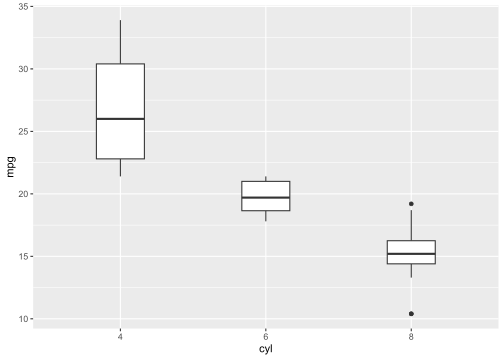
The first, and simplest example with labelled segments, uses labels to identify the contrasts but, does not use estimates from tests of significance.
In ‘ggplot2’, when a factor is mapped to x (or y) the values used internally are the numerical representation of the levels in the factor, i.e., as integer values starting from 1. Thus, the leftmost factor level on the x axis coresponds to 1, the second factor level to 2, and so on, irrespective of the labels.
In this page labels are in all examples based on data assembled in user code. It is crucial to make sure that the values mapped to xmin and xmax and to label are correct and consistent.
We construct a data frame with the data for text labels.
labels.df <-
data.frame(
pair.label = c("4 vs. 6 cyl.", "4 vs. 8 cyl.", "6 vs. 8 cyl."),
right.tip = c(2, 3, 3),
left.tip = c(1, 1, 2),
y.bar = c(35.5, 38, 33)
)Code
p1 +
geom_text_pairwise(data = labels.df,
aes(xmin = left.tip,
xmax = right.tip,
y = y.bar,
label = pair.label)) +
expand_limits(y = 40)While I will use geom_text_pairwise() for most examples, I here use geom_label_pairwise(). Their differences are similar to those between ggplot2::geom_text() and ggplot2::geom_label(). Other examples later in this page can be easily changed to use geom_label_pairwise() instead of geom_text_pairwise().
Code
p1 +
geom_label_pairwise(data = labels.df,
aes(xmin = left.tip,
xmax = right.tip,
y = y.bar,
label = pair.label),
segment.linewidth = 0.5,
linewidth = 0.5) +
expand_limits(y = 40) +
theme_bw()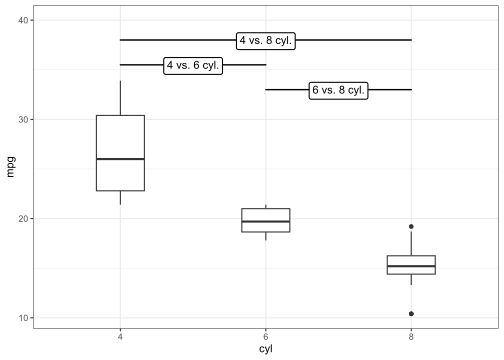
Code
p1 +
geom_label_pairwise(data = labels.df,
aes(xmin = left.tip,
xmax = right.tip,
y = y.bar,
label = pair.label),
fill = "black",
colour = "white",
colour.target = "text",
segment.linewidth = 0.75) +
expand_limits(y = 40)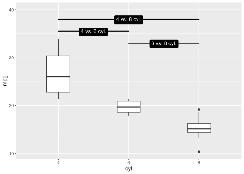
Pairwise t-test
To label the bars with P-values we can compute them before plotting and build a suitable data frame.
We run the test and construct a data frame with the results, adding arbitrary values for y to avoid overlaps.
my.htest <-
pairwise.t.test(my.cars$mpg, my.cars$cyl, p.adjust.method = "holm")
my.htest
Pairwise comparisons using t tests with pooled SD
data: my.cars$mpg and my.cars$cyl
4 6
6 0.00024 -
8 2.6e-09 0.00415
P value adjustment method: holm t.test.df <- data.frame(
p.value = as.vector(my.htest$p.value),
right.tip = c(2, 3, NA, 3),
left.tip = c(1, 1, NA, 2),
y.bar = c(35.5, 38, NA, 33)
)Code
p1 +
geom_text_pairwise(data = t.test.df,
aes(xmin = left.tip,
xmax = right.tip,
y = y.bar,
label = ifelse(p.value < 1e-3,
"italic(P)~`<`~0.001",
sprintf("italic(P)~`=`~%.3f", p.value))),
parse = TRUE,
na.rm = TRUE) +
expand_limits(y = 40)Code
p1 +
geom_text_pairwise(data = t.test.df,
aes(xmin = left.tip,
xmax = right.tip,
y = y.bar,
label = ifelse(p.value < 1e-3,
"italic(P)~`<`~0.001",
sprintf("italic(P)~`=`~%.3f", p.value))),
arrow = grid::arrow(angle = 90,
length = unit(1, "mm"),
ends = "both"),
parse = TRUE,
na.rm = TRUE) +
expand_limits(y = 40)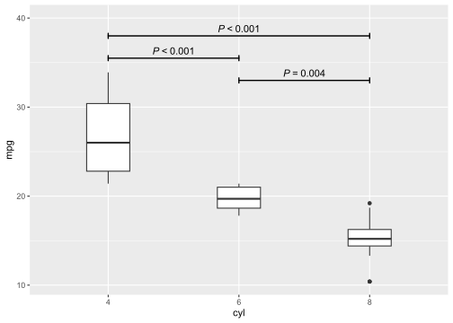
Code
p1 +
geom_text_pairwise(data = t.test.df,
aes(xmin = left.tip,
xmax = right.tip,
y = y.bar,
colour = p.value < 0.002,
label = ifelse(p.value < 1e-3,
"italic(P)~`<`~0.001",
sprintf("italic(P)~`=`~%.3f", p.value))),
arrow = grid::arrow(angle = 90,
length = unit(1, "mm"),
ends = "both"),
parse = TRUE,
na.rm = TRUE) +
scale_colour_manual(values = c("black", "red"), na.value = NA, guide = "none") +
expand_limits(y = 40)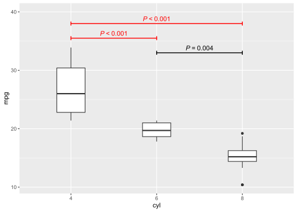
Code
p1 +
geom_text_pairwise(data = t.test.df,
aes(xmin = left.tip,
xmax = right.tip,
y = y.bar,
colour = p.value < 0.002,
label = ifelse(p.value < 1e-3,
"italic(P)~`<`~0.001",
sprintf("italic(P)~`=`~%.3f", p.value))),
arrow = grid::arrow(angle = 90,
length = unit(1, "mm"),
ends = "both"),
colour.target = "text",
parse = TRUE,
na.rm = TRUE) +
scale_colour_manual(values = c("black", "red"), na.value = NA, guide = "none") +
expand_limits(y = 40)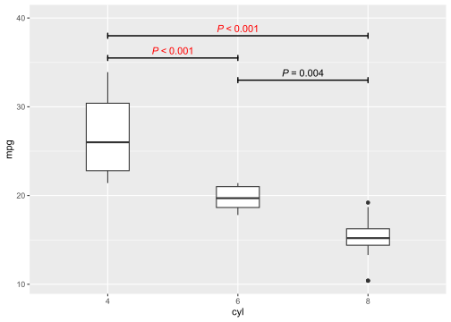
Pairwise Wilcox test
The object returned by pairwise.wilcox.text() has the same structure as that returned by pairwise.t.test() so we only need to change the names.
# warnings about ties have been silenced
my.w.test <-
pairwise.wilcox.test(my.cars$mpg, my.cars$cyl, p.adjust.method = "holm")
my.w.test
Pairwise comparisons using Wilcoxon rank sum test with continuity correction
data: my.cars$mpg and my.cars$cyl
4 6
6 0.0013 -
8 8.3e-05 0.0013
P value adjustment method: holm wilcox.test.df <- data.frame(
p.value = as.vector(my.w.test$p.value),
right.tip = c(2, 3, NA, 3),
left.tip = c(1, 1, NA, 2),
y.bar = c(35.5, 38, NA, 33)
)I show only the plot for the first t-test example, using identical code except for the name of the data frame. All other examples will also work without changes.
Code
p1 +
geom_text_pairwise(data = wilcox.test.df,
aes(xmin = left.tip,
xmax = right.tip,
y = y.bar,
label = ifelse(p.value < 1e-3,
"italic(P)~`<`~0.001",
sprintf("italic(P)~`=`~%.3f", p.value))),
parse = TRUE,
na.rm = TRUE) +
expand_limits(y = 40)Fitted contrasts
Package ‘gmodels’ provides methods for fitting arbitrary contrasts.
library(gmodels)Fitting contrasts individually, we can decide which contrasts are of a priori interest and limit testing to these. As for t-test and Wicox-test, P-values need to be adjusted, but the adjustment in this case is applied separately from the fitting.
To use function fit.contrasts() from package ‘gmodels’ we start by fitting a linear model to the same data as used for the examples above.
Analysis of Variance Table
Response: mpg
Df Sum Sq Mean Sq F value Pr(>F)
cyl 2 824.78 412.39 39.697 4.979e-09 ***
Residuals 29 301.26 10.39
---
Signif. codes: 0 '***' 0.001 '**' 0.01 '*' 0.05 '.' 0.1 ' ' 1We next fit de contrasts and extract the P-values from the returned value.
fit.contrast.df <-
data.frame(left.tip = 1:2,
right.tip = 2:3,
y.bar = c(36, 23),
p.value = p.adjust(
c(fit.contrast(mpg.cyl.lm, varname = "cyl", coeff = c(-1, 1, 0))[4],
fit.contrast(mpg.cyl.lm, varname = "cyl", coeff = c(0, -1, 1))[4])
))Although I could have passed a matrix to parameter coeff to fit both contrasts simultaneously I fitted them one by one for clarity.
I once again reuse unchanged except for the name of the data frame, the code used above for the t-test and Wilcox-tests examples.
Code
p1 +
geom_text_pairwise(data = fit.contrast.df,
aes(xmin = left.tip,
xmax = right.tip,
y = y.bar,
label = ifelse(p.value < 1e-3,
"italic(P)~`<`~0.001",
sprintf("italic(P)~`=`~%.3f", p.value))),
parse = TRUE,
na.rm = TRUE) +
expand_limits(y = 40)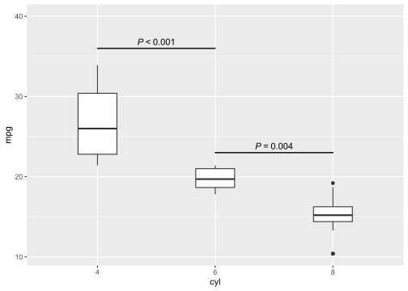
Function fit.contrast() can be used to fit in addition to pairwise contrasts, more complex contrast involving more than two factor levels. Currently, no geometry can directly add them to a plot as a single layer. One needs to build them layer by layer (not shown).
Multiple comparisons
Package ‘multicomp’ implements different multiple comparison methods, using a flexible and generally applicable approach.
Statistic stat_multcomp() from package ggpmisc automates the computation of adjusted P-values and formatted character strings to be parsed into R’s plotmath expressions, for the cases of “Tukey” and “Dunnet” contrasts. See examples in page Multiple comparisons with ‘ggpmisc’.
As with package ‘gmodels’ we need to first fit a linear or other model to the data. Here I reuse the fitted model from the previous section. The next example demonstrates the use of function glht() (General Linear Hypotheses Tests) with Tukey’s method for pairwise multiple comparisons.
mpg.cyl.glht <- glht(model = mpg.cyl.lm, linfct = mcp(cyl = "Tukey"), rhs = 0)
summary(mpg.cyl.glht)
Simultaneous Tests for General Linear Hypotheses
Multiple Comparisons of Means: Tukey Contrasts
Fit: lm(formula = mpg ~ cyl, data = my.cars)
Linear Hypotheses:
Estimate Std. Error t value Pr(>|t|)
6 - 4 == 0 -6.921 1.558 -4.441 <0.001 ***
8 - 4 == 0 -11.564 1.299 -8.905 <0.001 ***
8 - 6 == 0 -4.643 1.492 -3.112 0.011 *
---
Signif. codes: 0 '***' 0.001 '**' 0.01 '*' 0.05 '.' 0.1 ' ' 1
(Adjusted p values reported -- single-step method)We need as above to build a data frame with the data for the pairwise labels, in this case extracting the P-value estimates from the object returned by summary().
multcomp.df <-
data.frame(
p.value = summary(mpg.cyl.glht)$test$pvalues,
left.tip = c(1, 1, 2),
right.tip = c(2, 3, 3),
y.bar = c(35.5, 38, 33)
)I once again reuse unchanged the code used above for the t-test and Wilcox-tests examples except for the name of the data frame passed as argument to data.
Code
p1 +
geom_text_pairwise(data = multcomp.df,
aes(xmin = left.tip,
xmax = right.tip,
y = y.bar,
label = ifelse(p.value < 1e-3,
"italic(P)~`<`~0.001",
sprintf("italic(P)~`=`~%.3f", p.value))),
parse = TRUE,
na.rm = TRUE) +
expand_limits(y = 40)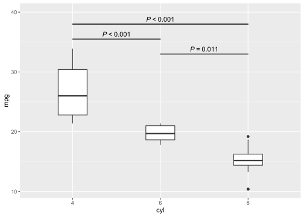
As is the case with function fit.contrasts() used in the previous section, function glht() can be used to fit many different contrasts, pairwise or otherwise, with suitable corrections for multiple comparisons. Currently, no geometry can directly add labelled segments for contrasts that are not pairwise. One needs to build them layer by layer, labels and segments (not shown).
Other uses
Although labelled segments are most commonly used to report the results of pairwise significance tests, several other uses are possible. An obvious one is to highlight a range of values for a continuous variable or a group of succesive factors levels.
Geometries geom_text_pairwise() and geom_label_pairwise(), used in the examples above with factors, can be also used when the variables mapped onto aesthetics x and y are both continuous.
In this section I show examples of their use to highlight ranges of values of a continuos variable from the same data set. I start by constructing a suitable base plot to use for labelling examples.
Code
p2 <-
ggplot(my.cars, aes(disp, mpg)) +
geom_point()+
geom_hline(yintercept = 0, colour = "grey90", linewidth = 1.2) +
theme_bw()
p2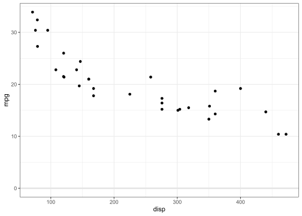
I construct a data frame with the data for labelling ranges. In this case as x is numeric, and we set the x values for the segment tips using user-data units (i.e., the values as shown in x axis’ tick marks).
my.ranges <-
data.frame(A = c(50, 200, 400),
B = c(200, 400, 500),
bar.height = 0,
text = c("small", "medium", "large"))The code is very similar to that used for the pairwise examples in previous sections. The main change is that I used different names for the columns of the data frame.
Code
p2 +
geom_text_pairwise(data = my.ranges,
aes(xmin = A,
xmax = B,
y = bar.height,
label = text,
colour = text),
segment.linewidth = 1) +
scale_colour_discrete(guide = "none") +
expand_limits(y = 0) +
theme_bw()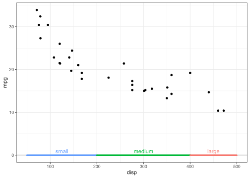
Code
p2 +
geom_text_pairwise(data = my.ranges,
aes(xmin = A,
xmax = B,
y = bar.height,
label = text),
arrow = grid::arrow(ends = "both", length = unit(2, "mm"))) +
expand_limits(y = 0) +
theme_bw()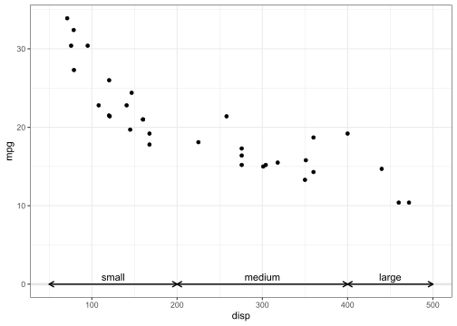